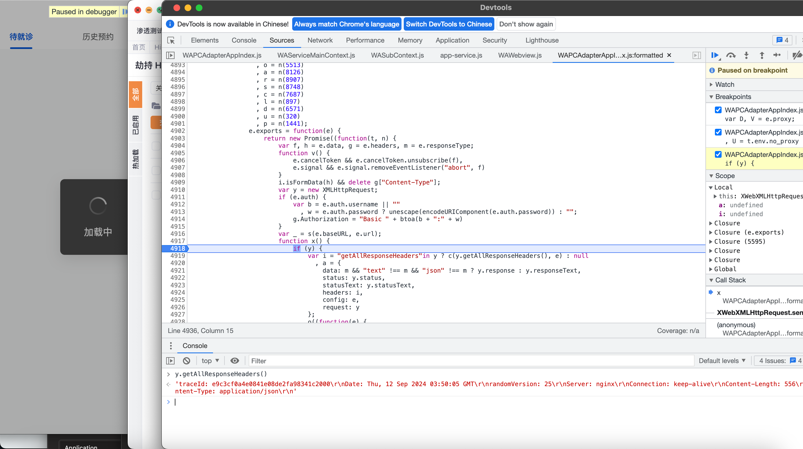
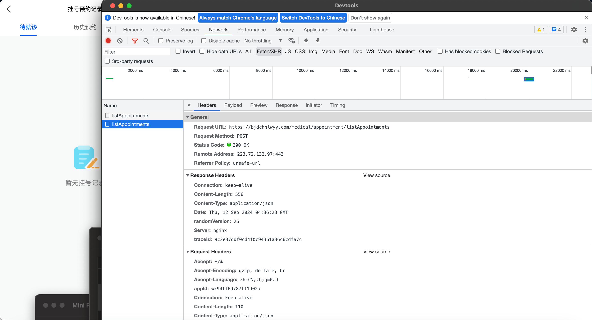

目标：北京市第六医院
抓包方式：proxifier设置代理抓包
Burp v2024.5.3：127.0.0.1:8080
Yakit v1.3.6-0906：127.0.0.1:8181
（先说结论，微信对协议的处理问题）
异常情况
目前的情况是，当没有代理的时候，一切正常。开启代理后，小程序页面出现请求失败，但奇怪的是，数据包的响应是正常的。
目前知道的是，加解密函数使用的AES/ECB。key没有写死，是通过请求获取到的，加解密函数为usr/app-service.js:formatted中的interceptorDecrypt/interceptorEncrypt。
逆向过程
关键定位 randomVersion
通过搜索”请求失败”关键字，定位到notice: d.message || “请求失败”。发现这里是个switch判断，向前读代码，查它为什么会跑到case19这里。
然后发现是前面case12 的时候有个判断if(h.statusCode !== t.default.HTTP_OK || d.code !== t.default.ERR_HTTP_TOKEN)，当为true的时候就会跳到case19，其中t.default.HTTP_OK是200，t.default.ERR_HTTP_TOKEN是401。
当走到这里的时候，发现d.code是未定义undefined，那现在的重点就到了去查为什么这个d.code没有定义了。继续向前看，可以看到d是在case7中的if里面被定义的，这时候d就是一整串的密文，所以后面的d.code就会undefined。
对比一下，不开代理的情况下，这里的h.data结果为解密后的请求，其中就有code。那现在的重点就变成了去找h.data的定义，找到为什么两种情况下h.data的值不一样。
继续向前，是在case0的中进行定义h=v(l,u),两个入参只有l是带了数据的，然后通过对比，发现在这之前，l就已经不一样了，所以不是这个v()函数检测的代理，那现在应该去找l的定义，但是这里再往前就没东西了，这个函数内没有任何关于l的定义，
然后就是根据scope堆栈信息一直向前找，但是由于水平比较次，对js不熟悉，花了大把时间后毫无结果，然后我想到，既然两种情况下的结果的不同点是，正常请求的data为解密后的内容，代理情况请求的data为没有解密的密文，那我在正确请求下，去解密函数那边打个断点不就能找到区别了，于是就在interceptorDecrypt里面和调用了interceptorDecrypt的地方打上了断点，然后关掉代理，随后就定位到了这里
有了前一次的经验，这里直接往前看，要到case7，就要到case3里面的(((s = u.randomVersion) || 0 === s) && "[object Object]" !== Object.prototype.toString.call(o))在这里打上断点，观察两重情况下的区别
不开代理的情况下，判断条件为true，其中u.randomVersion为8，请求中的randomVersion是大写。

开代理后，u.randomVersion直接就获取不到了，所以导致这里直接为false，无法做到case7进行解密。不过这里可以获取到u.randomversion,此时请求头中的字段也是小写randomversion。找到区别后，绕过方法就简单了，直接bp的replace里把小写的randomversion改成randomVersion即可(实际操作发现并不行，改完之后的请求头到``(((s = u.randomVersion) || 0 === s)`这里还是小写)。不过我现在想知道的是它怎么知道我开了代理。
确定问题
在和朋友交流后，尝试确定小程序是检测了代理情况还是检测了Burp，所以我分别用proxifier转clash和yakit进行尝试，发现小程序都正常响应，所以确定是检测了Burp，但是我对比yakit和burp的响应，几乎是一模一样，后面我又把yakit的响应拦截，全部换成burp的响应，结果还是正常，那基本可以确定不是响应的不同导致的小程序不同。
于是还是决定去js中确定问题，首先是确定发包情况，这个小程序的http请求是通过XMLHttpRequest发送的，像randomVersion: 23这种自定义的请求头，是通过setRequestHeader()方法设置的。于是找到相关代码，下好断点，发现这里设置的是randomVersion，大写
而我实际拦截到的却是Randomversion，小程序报请求失败。
而我在yakit的情况下，这里设置的请求头依然是randomVersion，大写
我实际拦截到的却是randomVersion，和js中看到的一样，小程序正常。
请求的时候，在js中完全一致，但是抓包到的时候却不同。那再看一下响应，XMLHttpRequest中获取响应头的方法是getAllResponseHeaders()。同样是找到相关代码，然后下断点，在burp代理的情况下，y.getAllResponseHeaders()的结果全是小写的。
在yakit代理的情况下，y.getAllResponseHeaders()的结果是有大写有小写的。

那这样几乎可以判断，这个大小写问题似乎和这个小程序没关系，然后我又去找了其他几个小程序，去看他们的发送请求和接收响应的代码，几乎一样，那是不是意味着是微信平台识别了我的burp，然后改写过XMLHttpRequest这个对象，去问了一下做过小程序开发的朋友，然后找到了类似的问题https://developers.weixin.qq.com/community/search?query=%25E5%2593%258D%25E5%25BA%2594%25E5%25A4%25B4%2520%25E5%25B0%258F%25E5%2586%2599&page=1&block=1&random=1726109156271&type=1。似乎是协议的问题，然后去控制台的network那边确认一下，选上协议。
果不其然，这里面协议是h2的请求，都是走bp的请求，也是会导报”请求失败”的请求。于是关掉bp的h2，在proxy listeners里面，取消勾选”Support HTTP/2”。然后就一切正常了

总结
总结一下的话就是，微信平台对于协议的处理+小程序自定义字段的识别导致的这个问题，我猜测微信平台检测到流量使用http2协议时，为了符合要求，会自动将数据包请求头改为小写，而小程序的开发者似乎没有意识到这个问题，在后台中写了if (((s = u.randomVersion) || 0 === s) && "[object Object]" !== Object.prototype.toString.call(o)) 这样一个判断，用来正常检测响应头中是否存在randomVersion字段（这个字段对于该系统来说是必须的），结果却误打误撞（可能）检测了burp代理。

那感觉这种东西好像可以拿来做蜜罐，不过好像也不能百分之百确定从http2进来的就是攻击者的流量，容易误伤。
参考
https://phantomvk.github.io/2018/12/13/HTTP2_Header_lower_case/
https://developers.weixin.qq.com/community/develop/doc/00044cd9fa05687e731afd4fa51c00